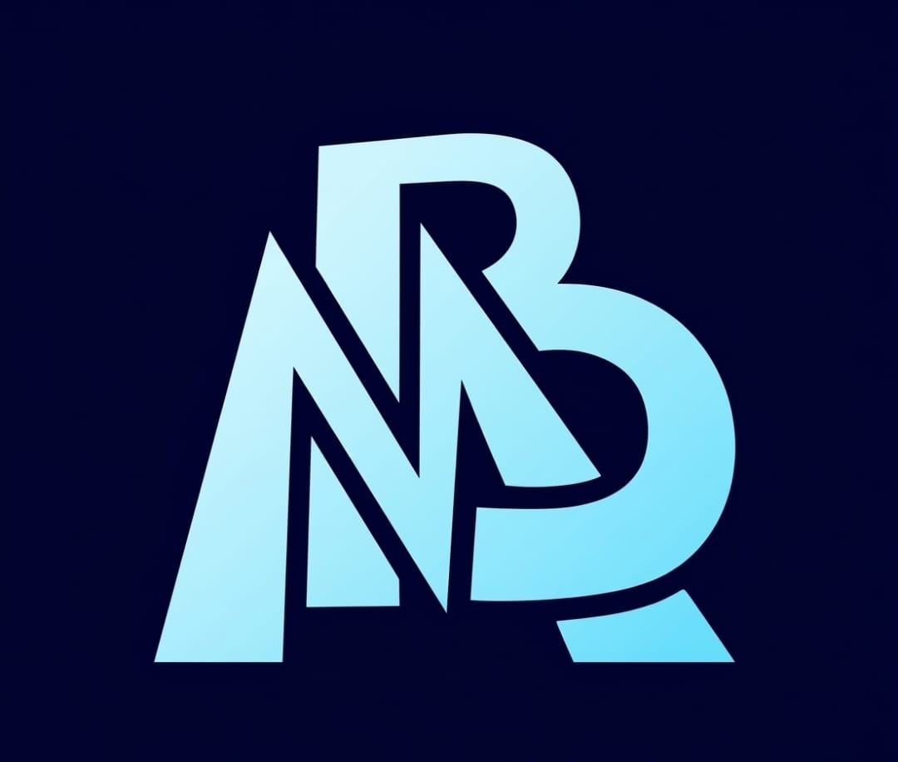

Sites & experiências
Presença digital com personalidade. Sites institucionais, landing pages e portfólios que apresentam sua marca com clareza.

MB AUTOMAÇÕESVamos conversar ↗Criamos sites, aplicativos e automações que conectam sua empresa ao que vem a seguir.
Cada negócio tem um próximo passo.
A gente constrói o caminho digital.
Presença digital com personalidade. Sites institucionais, landing pages e portfólios que apresentam sua marca com clareza.
Ferramentas feitas para sua rotina. Aplicações web, painéis e soluções sob medida para organizar o que importa.
Menos tarefas repetitivas, mais espaço para crescer. Conectamos processos e ferramentas para sua operação fluir.
Abra, navegue e interaja.
Os projetos funcionam aqui dentro.
PULSE e NotaFlow são projetos desta pasta. Forma e Flow são conceitos criados para demonstrar possibilidades.
Você participa das decisões.
A gente cuida de transformar em solução.
Ouvimos sua ideia, sua rotina e os desafios que vale a pena resolver.
Definimos o escopo e criamos uma experiência que faz sentido para seu público.
Desenvolvemos e validamos a solução com espaço para você acompanhar.
Preparamos a entrega e alinhamos os próximos passos da sua evolução digital.
Conte o que você imagina. A gente ajuda a encontrar o melhor caminho para colocar em prática.
WhatsApp (38) 99875-1718 ↗E-mail mbautomacao16@gmail.com ↗